cenno
Floating question surfaces · Reporter-style design language · generated frames
Floating panel — 420×240 (2x)
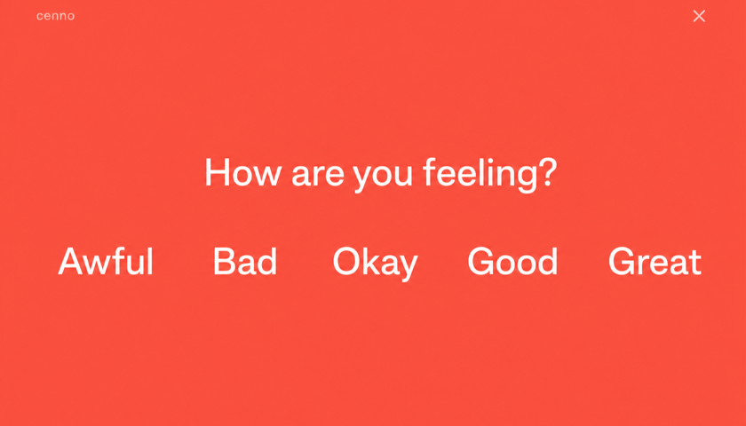
panel/mood-checkin — coral · 5 mood words
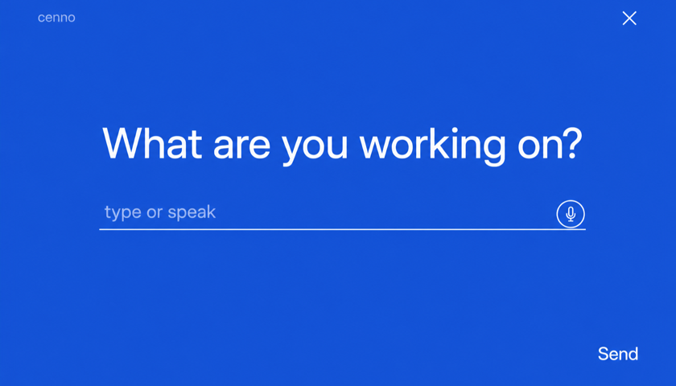
panel/free-text — cobalt · underlined input + mic + send
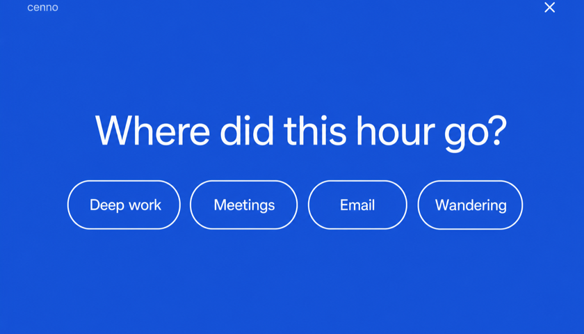
panel/choice — cobalt · 4 pill chips
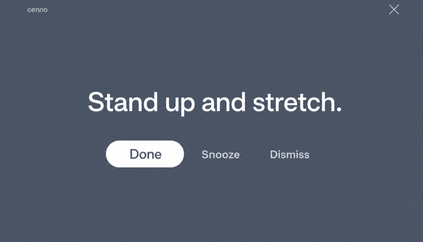
panel/reminder — slate · Done / Snooze / Dismiss
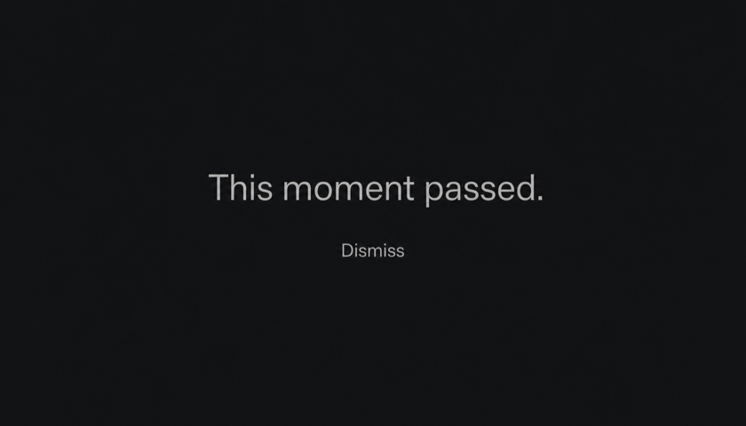
panel/expired — ink · "this moment passed"
Fullscreen takeover — 1440×900
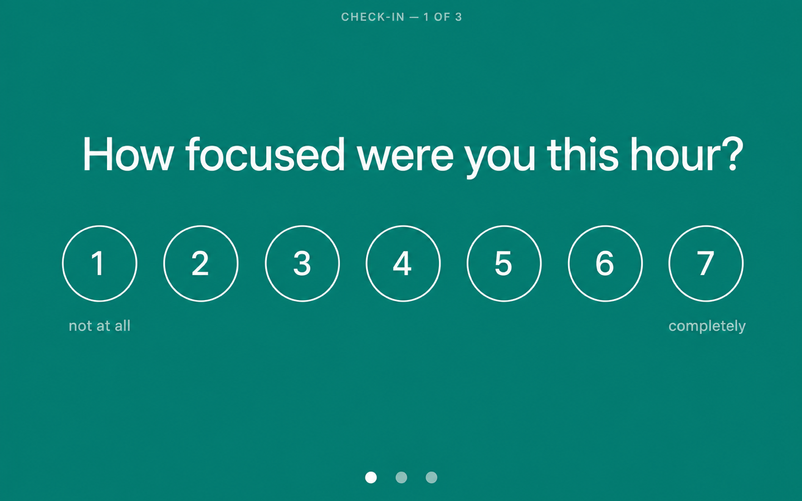
fullscreen/ema-1-scale — teal · 1–7 focus scale · dots 1/3
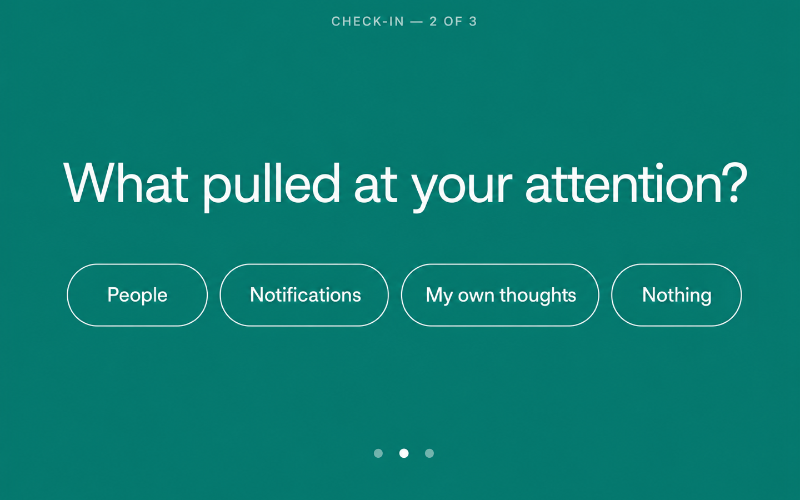
fullscreen/ema-2-choice — teal · attention chips · dots 2/3
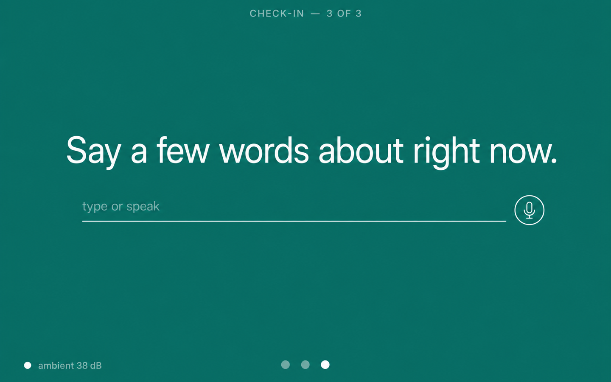
fullscreen/ema-3-voice — teal · voice/text + ambient 38 dB · dots 3/3
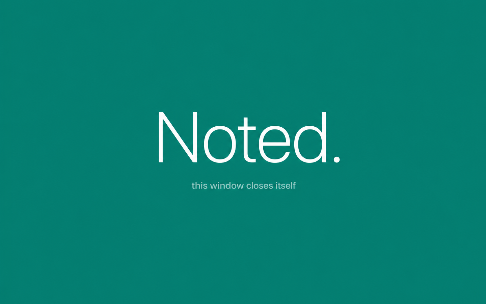
fullscreen/ema-done — teal · "Noted." auto-dismiss
Tray popover — 360×480 (2x)
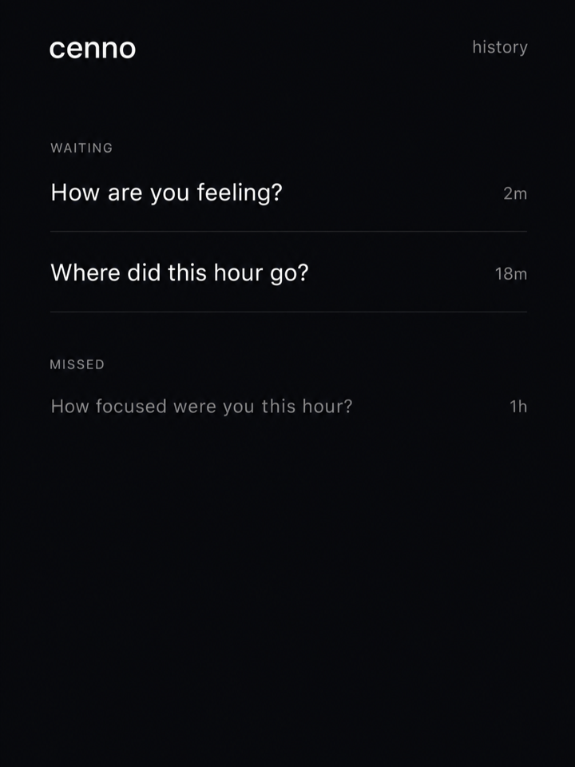
tray/inbox — ink · waiting + missed prompts
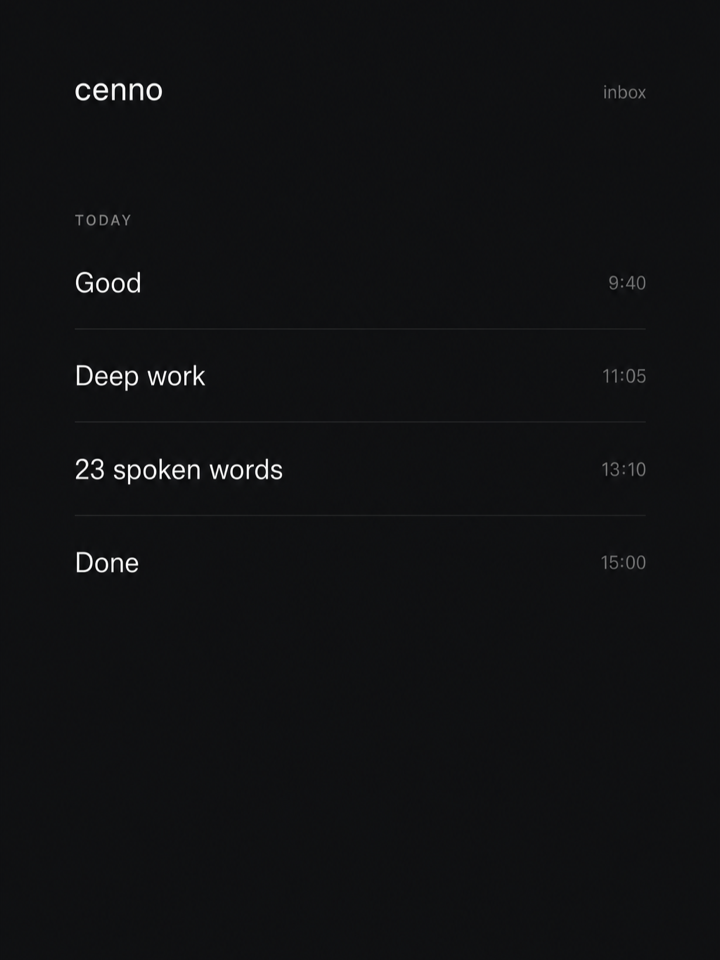
tray/history — ink · answered items
Tokens
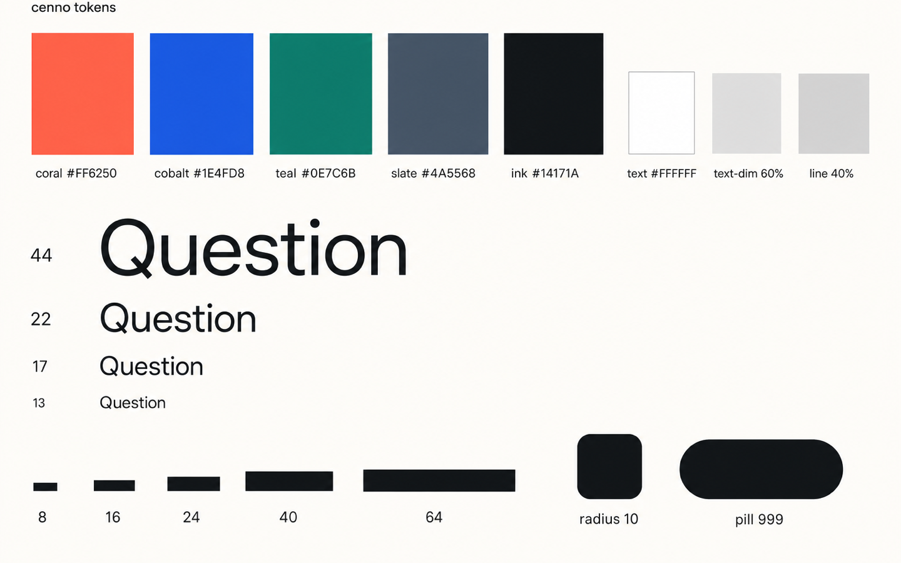
tokens/sheet — palette, type scale, spacing, radius (DTCG-ready)
coral #FF6250
cobalt #1E4FD8
teal #0E7C6B
slate #4A5568
ink #14171A